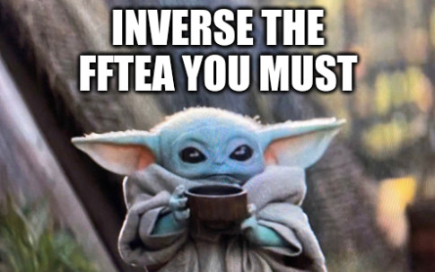

Challenge #402
FFTea
La transformée de Fourier permet de représenter un signal temporel dans le domaine
fréquentiel : avec cet outil, il est possible de savoir, pour une capture radio, quelles
sont les fréquences actives dans la bande de fréquence capturée.
C’est une opération parfaitement réversible : on peut effectuer l’opération inverse sans
perte d’information.
Ici, nul besoin de faire une analyse de Fourier: utilisez simplement une transformée de
Fourier de taille 64 sur le tableau de données contenu dans le fichier
fftea, le
résultat contient le flag. Le code de génération du fichier est donné.
Note : Le format de fichier d’entrée est une suite de nombres complexes
sur 64 bits
(un nombre flottant sur 32 bits pour la partie réelle et la partie imaginaire). Il est
possible de lire le contenu du tableau en Python avec la fonction fromfile
du paquet
numpy ainsi:
data = numpy.fromfile("fftea", dtype=numpy.complex64).

Fichiers à étudier
- fftea
- craft_signal.py
import numpy as np
import numpy.fft
FLAG = open("flag.txt", "rb").read()
array = np.array([], dtype=np.complex64)
for c in FLAG:
array = np.append(array, c)
# Compute inverse FFT
result = np.array(np.fft.ifft(array, n=64), dtype=np.complex64)
result.tofile("challenge")